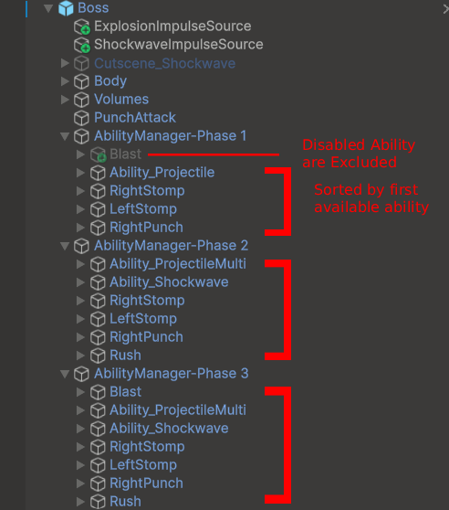
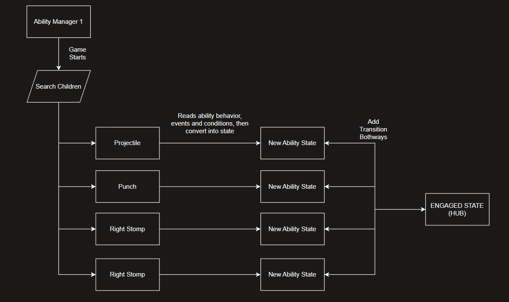
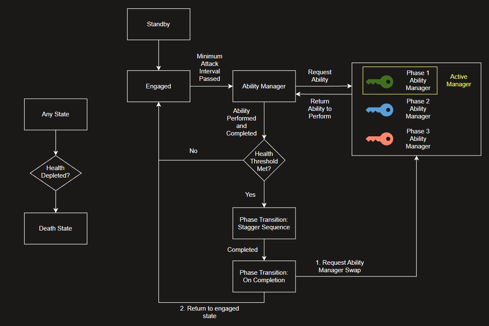
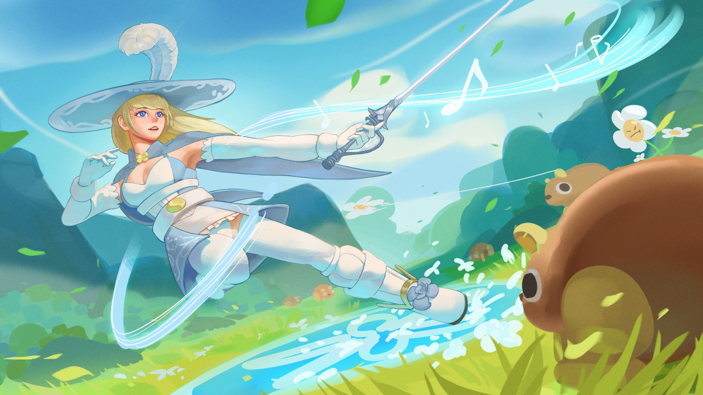

Amidst Blooming Melodies
Demo Video
Project Overview
Amidst Blooming Melodies is a proof-of-concept action-adventure built around a diegetic health mechanic, the Volume: a circle beneath the player that purifies and interacts with the environment. It pairs puzzle-box level design with a three-phase boss fight. I developed it as my Master's project, running a between-subjects study with two builds to investigate how audiovisual and narrative design enhance the combat experience while keeping the underlying mechanics identical across both conditions. The results show that audiovisual and narrative design slightly improved perceived quality, and had a stronger effect on emotional impression, engagement and long-term impression.
Tools
- Unity
- FMOD Studio
- Blender
- Krita
- Audacity
- FL Studio
- Ableton Live 12
Roles
- Gameplay / Mechanics Design
- Combat Design
- Narrative Design
- Systems Design
- Programming
- Music Composition
- Technical Art
- UI/UX
Design Breakdown
Core Mechanic
The game features a diegetic health mechanic: the Volume, displayed beneath the player character as a circle. The circle also interacts with the game environment (as a purify source).
Purify, Not Kill
The enemies are corrupted, so the player purifies them instead of killing them. Attacking enemies causes the same circle on them to grow. The circle turns green and the creature visually changes when purification completes.
Because enemies share the same Volume system, attacking reads as helping instead of hurting them. Several testers found it a novel and heartwarming experience.
Volume as a Puzzling Tool
Creatures other than Flos can have a Volume too. The Volume also acts as a puzzle tool that interacts with the environment and reveals hidden objects, so the purification theme extends beyond combat.
The prototype explores puzzles where the player attacks to grant a creature volume, sings, or uses their volume to reveal hidden objects.
3-Phase Boss Design
The goal is to teach first, then escalate with each phase.
- Phase 1: Introduces the boss's actions at low difficulty: an easy-to-dodge exploding projectile toss, punches and stomps.
- Phase 2: Adds mobility and positioning pressure with two consecutive rushes, a jumpable shockwave, and a triple projectile toss.
- Phase 3: Escalates with three consecutive rushes and adds an ultimate charged explosion that hits hard up close and scatters exploding projectiles.
Phase Transitions That Feel Like Progress, Not Punishment
At the end of each phase, a transition sequence plays where the boss releases an undodgeable shockwave that knocks the player down. Pressing Q restores their health as the music and effects shift. This makes the fight unlikely to be lost, since losing an emotionally heavy boss fight hurts immersion.
An adaptive soundtrack and visual effects are used to signal the change in Flos's state and progression.
Testers initially mistook the shockwave for an unfair attack, so I hid the boss health bar during the sequence, which prevented the misread.



Modular Game-Object-Based State Machine / Ability System
This ability system has 3 design pillars: modular, game-object based (designer friendly) and procedural state generation.
The enemy's abilities are created as child game objects, and the state machine is generated from them at spawn. An ability only defines what it does and its conditions, and the system handles entering and exiting its state.
The AI requests abilities from the Ability Manager at runtime, rather than having them hardcoded and fixed within the AI. Ability Managers can be swapped at runtime. Any states still running are allowed to finish before the switch takes effect seamlessly.
Adding or removing an ability object changes the moveset with no code change, and nothing breaks. Once the system existed, the full moveset took under five days, with each ability functional in under 30 minutes.
Narrative

Floralis and the Voiceless
You play as Flos, an interstellar traveller who crash-lands on the planet Floralis and discovers it is her home planet. Floralis is plagued by a phenomenon known as the Voiceless. Flos uses her songs to purify corrupted enemies, solve puzzles, and bring voices back to her home.
The mechanics carry the theme: the Volume is both her health bar and a tool for purifying her surroundings.
Splash and Concept Art by Zhong Hao Lai
Links and Documents
The GDD covers each mechanic and the design and development process behind them.